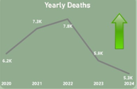
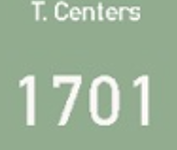

Total injuries increased from 56K (2022) to 76K (2024), indicating rising road safety risks.
Fatality rate decreased from 8.3% to 6.8%, reflecting improved emergency response and safety measures.
Ambulance capacity increased, reaching a total of 1,701 centers nationwide.
Injuries are highest among the 25–35 age group, followed by 15–25, indicating elevated risk among young and working‑age drivers.
Target safety campaigns and stricter enforcement toward drivers aged 15–35, especially on high‑traffic roads.
Injury levels remain consistently high across months, with noticeable seasonal peaks indicating persistent risk patterns.
Apply seasonal safety measures and increase traffic enforcement during peak‑risk periods.
Passenger injuries consistently exceed those of drivers and pedestrians, indicating higher exposure among vehicle occupants.
Strengthen seatbelt enforcement, vehicle safety standards, and passenger‑focused awareness campaigns.
Certain governorates, such as Giza and Sharkia, record the highest number of dangerous roads.
Prioritize infrastructure upgrades, signage improvements, and stricter traffic control in high‑risk governorates.
Injuries are concentrated in a small number of governorates, indicating regional disparities in road safety.
Allocate safety resources and enforcement efforts based on regional injury severity.
Some high‑risk governorates have insufficient ambulance centers relative to road danger levels.
Reallocate and expand ambulance services in high‑risk areas to improve emergency response times.
Based on the comprehensive analysis of road accident data in Egypt, the following recommendations are proposed to support evidence‑based decision‑making and enhance overall road safety outcomes.
Policymakers should prioritize high‑risk age groups (15–35 years) by implementing targeted road safety awareness programs and reinforcing traffic law enforcement.
Infrastructure development and maintenance efforts should be directed toward governorates with high injury levels and dangerous road segments.
Passenger safety must be strengthened through strict enforcement of seatbelt laws, improved vehicle safety standards, and public education initiatives.
Seasonal road safety strategies should be adopted to address observed fluctuations in injury trends during high‑risk periods.
Emergency response effectiveness should be enhanced by optimizing the distribution of ambulance centers based on population density and road risk indicators.
Continuous use of data‑driven dashboards is essential for monitoring trends, evaluating interventions, and supporting sustainable safety policies.